24 Construcción de modelos
24.1 Introducción
En el capítulo previo aprendimos cómo funcionan los modelos lineales, y aprendimos algunas herramientas básicas para entender lo que un modelo está mostrando con sus datos. El capítulo previo se enfocó en simular conjunto de datos. Este capítulo se centrará en datos reales, mostrando como puedes progresivamente construir un modelo que te ayude a entender los datos.
Tomaremos ventaja del hecho que se puede pensar que un modelo particiona tus datos en patrones y residuos. Encontraremos patrones con visualizaciones, luego los haremos concretos y precisos con un modelo. Repetiremos luego el proceso, pero reemplazaremos la variable antigua con los residuos del modelo. El objetivo es pasar de un conocimiento implícito en la data a un conocimiento explícito en un modelo cuantitativo. Esto hace que sea más fácil aplicar nuevos dominios, y más fácil de usar para otros.
Para un conjunto de datos muy grande y complejo esto será mucho trabajo. Sin duda hay enfoques alternativos - un enfoque de aprendizaje automático es simplemente enfocarse en la capacidad predictiva del modelo. Ese enfoque tiende a producir cajas negras: el modelo hace muy bien su trabajo generando predicciones, pero no sabes por qué. Esto es un enfoque totalmente razonable, pero es difícil de aplicar el conocimiento del mundo real al modelo. Eso, a su vez, hace difícil evaluar si el modelo continuará o no funcionando a largo plazo, ya que los fundamentos cambian. Para la mayoría de los modelos, esperaría que usaras alguna combinación de este enfoque y un enfoque clásico automatizado.
Es un desafio saber cuando detenerse. Necesitas darte cuenta cuando tu modelo es lo suficientemente bueno, y cuando no es conveniente invertir mas tiempo en él. Me gusta especialmente esta cita del usuario de reddit Broseidon241:
Hace mucho tiempo en clase de arte, mi profesor me dijo “Un artista necesita saber cuándo una pieza está terminada. No puedes retocar algo a la perfección - termínalo. Si no te gusta, hazlo otra vez. O sino empieza algo nuevo”. En años posteriores, yo escuché “Una pobre costurera comete muchos errores. Una buena costurera trabaja duro para corregir esos errores. Una grandiosa costurera no tiene miedo de tirar la prenda y empezar nuevamente”.
– Broseidon241, https://www.reddit.com/r/datascience/comments/4irajq
24.1.1 Prerrequisitos
Usaremos las mismas herramientas que en el capítulo anterior, pero agregaremos algunos conjuntos de datos reales: diamantes y vuelos del paquete datos También necesitaremos lubridate para trabajar con fechas/horas en vuelos.
24.2 ¿Por qué los diamantes de baja calidad son más caros?
En el capítulo anterior vimos una sorprendente relación entre la calidad de los diamantes y su precio: diamantes de baja calidad (cortes pobres, colores malos, y claridad inferior) tienen más altos precios.
ggplot(diamantes, aes(corte, precio)) + geom_boxplot()
ggplot(diamantes, aes(color, precio)) + geom_boxplot()
ggplot(diamantes, aes(claridad, precio)) + geom_boxplot()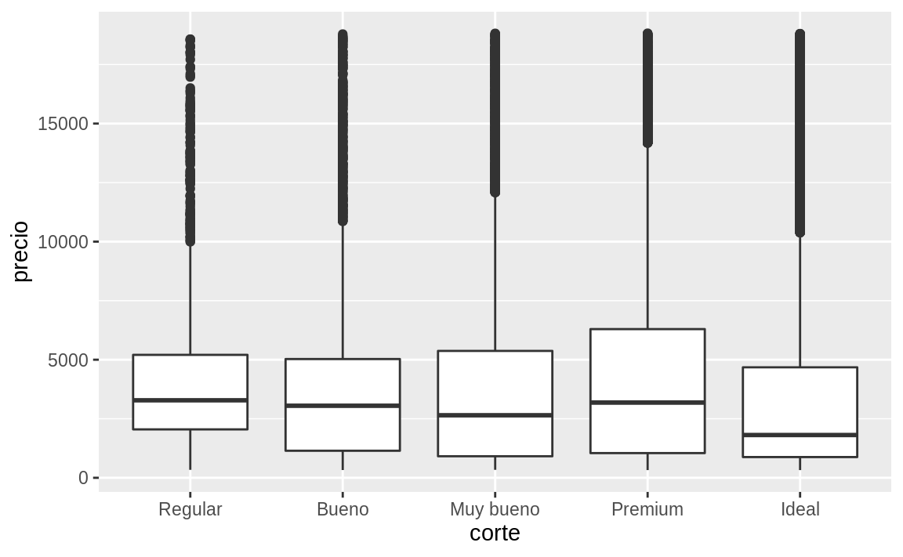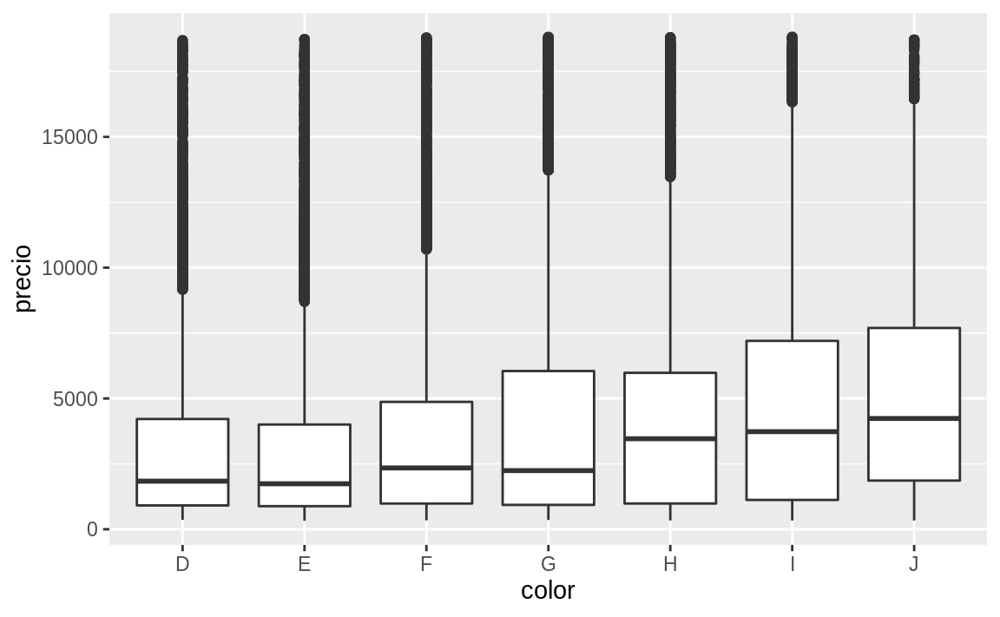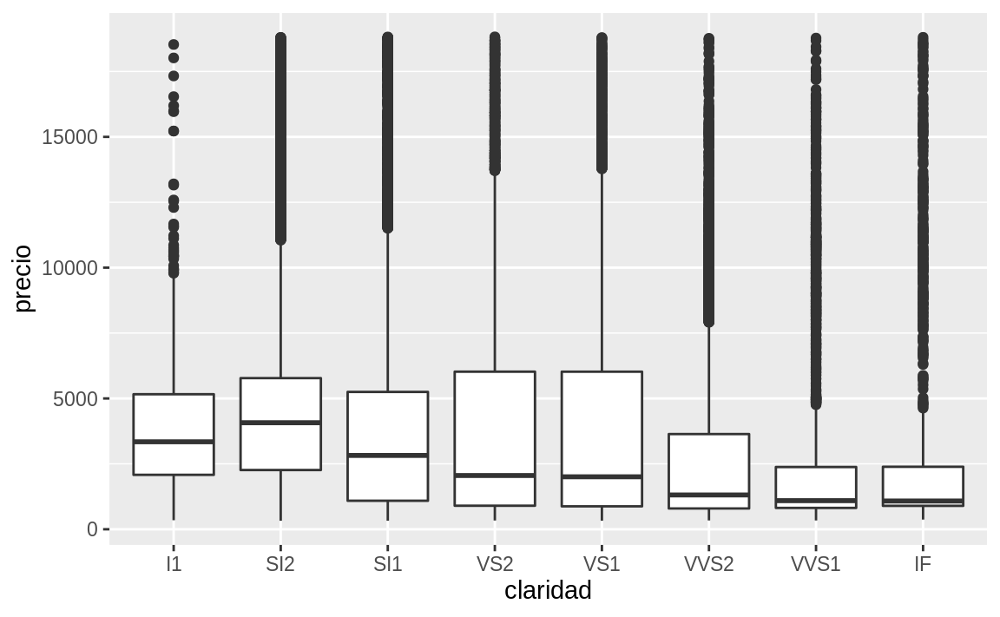
Ten en cuenta que el peor diamante es J (amarillo claro), y la peor claridad es I1 (inclusiones visibles a simple vista).
24.2.1 Precio y quilates
Pareciera que los diamantes de menor calidad tiene precios más altos porque hay una importante variable de confusión: el peso (carat) del diamante. El peso del diamante es el factor individual más importante para determinar el precio del diamante, y los diamantes de menor calidad tienden a ser más grandes.
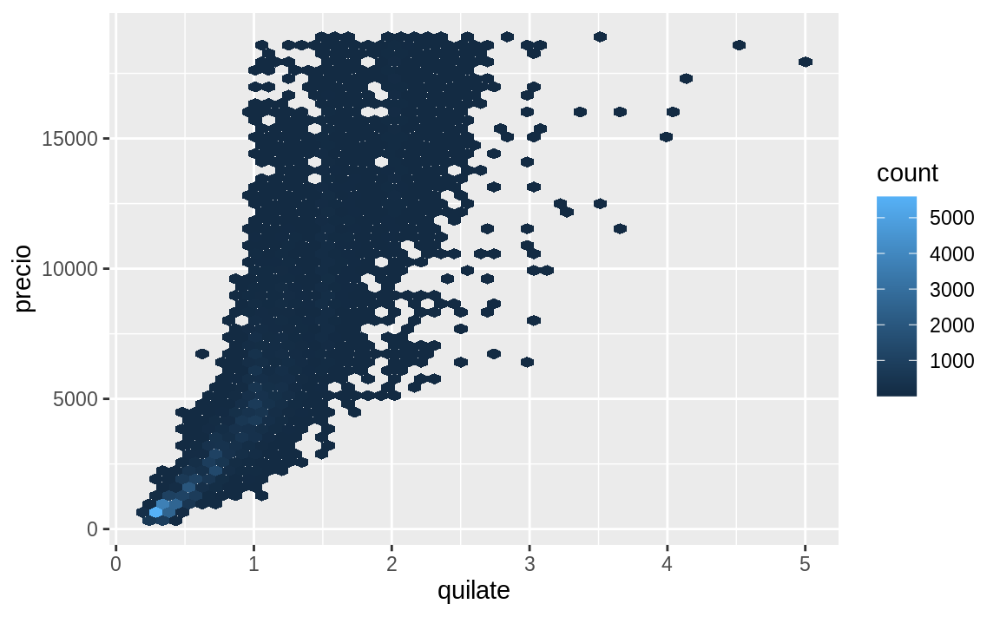
Podemos hacer que sea más fácil ver cómo los otros atributos de un diamante afectan su precio relativo al ajustar un modelo para separar el efecto de quilates. Pero primero, hagamos algunos ajustes al conjunto de datos de diamantes para que sea más fácil trabajar con ellos:
- Foco en los diamantes más pequeños que 2.5 quilates (99.7% de los datos).
- Haz una transformación logarítmica de las variables quilates y precio
diamantes2 <- diamantes %>%
filter(quilate <= 2.5) %>%
mutate(log_precio = log2(precio), log_quilates = log2(quilate))Juntos, esos cambios hacen más fácil ver la relación entre quilates y precio:
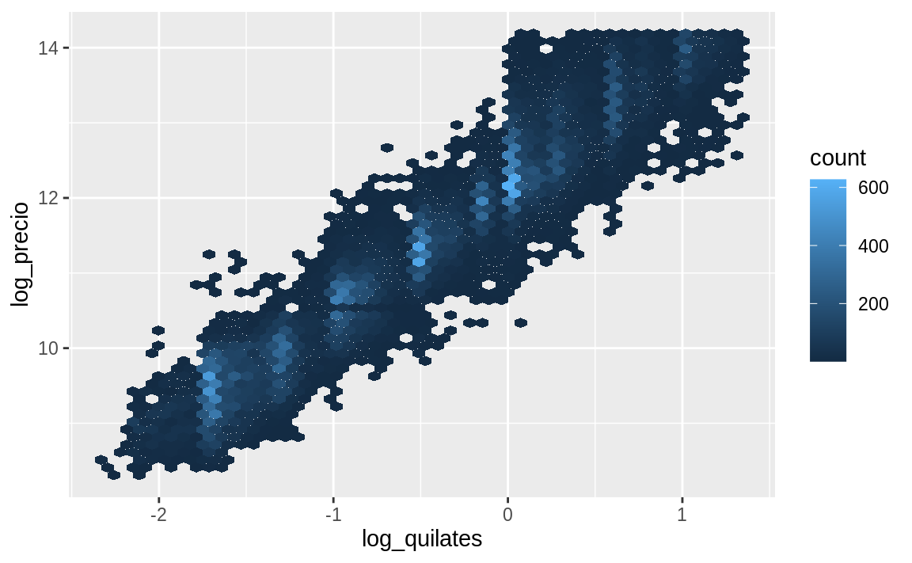
La transformación logarítmica es particularmente util aquí porque hace que el patrón sea lineal, y patrones lineales son más fáciles de usar. Tomemos el próximo paso y eliminemos ese patron lineal fuerte. Primero hacemos explícito el patrón ajustando el modelo:
Luego observamos lo que el modelo nos dice. Ten en cuenta que vuelvo atrás la transformación de la predicción, deshaciendo la transformación logarítmica, para poder superponer las predicciones sobre los datos originales:
cuadricula <- diamantes2 %>%
data_grid(quilate = seq_range(quilate, 20)) %>%
mutate(log_quilates = log2(quilate)) %>%
add_predictions(mod_diamantes, "log_precio") %>%
mutate(precio = 2 ^ log_precio)
ggplot(diamantes2, aes(quilate, precio)) +
geom_hex(bins = 50) +
geom_line(data = cuadricula, colour = "red", size = 1)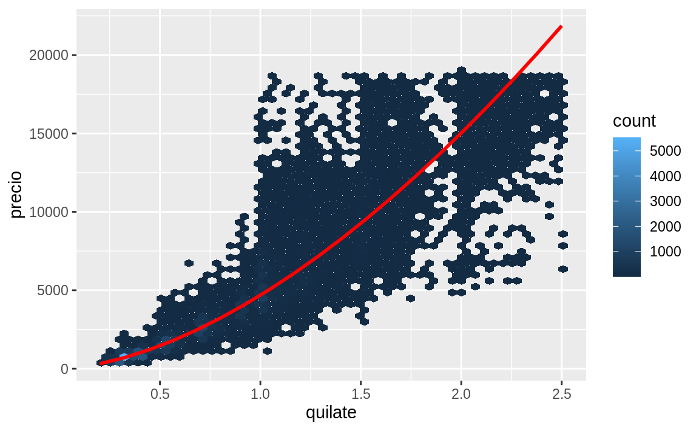
Eso nos dice algo interesante acerca de nuestros datos. Si creemos en nuestro modelo, los diamantes grandes son mucho más baratos que lo esperado. Esto es posiblemente porque ninguno de los diamantes de estos datos cuesta más de US$19,000.
Ahora podemos ver los residuos, lo cual comprueba que hemos eliminado el patrón lineal fuerte:
diamantes2 <- diamantes2 %>%
add_residuals(mod_diamantes, "lresid")
ggplot(diamantes2, aes(log_quilates, lresid)) +
geom_hex(bins = 50)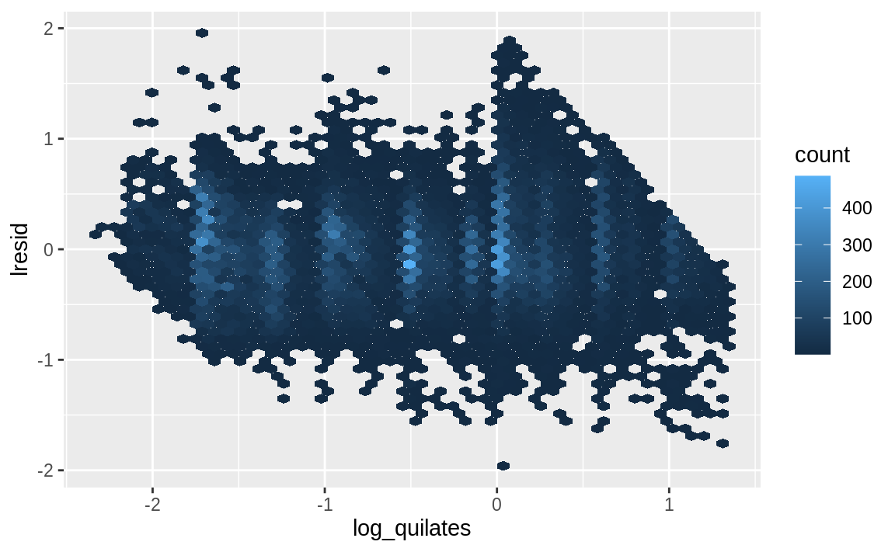
Es importante destacar que ahora podemos volver a hacer nuestros gráficos motivadores utilizando esos residuos en lugar de precio.
ggplot(diamantes2, aes(corte, lresid)) + geom_boxplot()
ggplot(diamantes2, aes(color, lresid)) + geom_boxplot()
ggplot(diamantes2, aes(claridad, lresid)) + geom_boxplot() 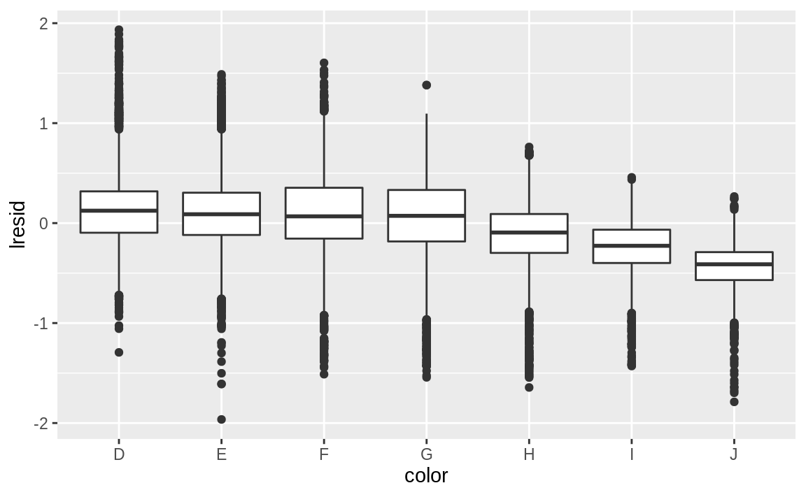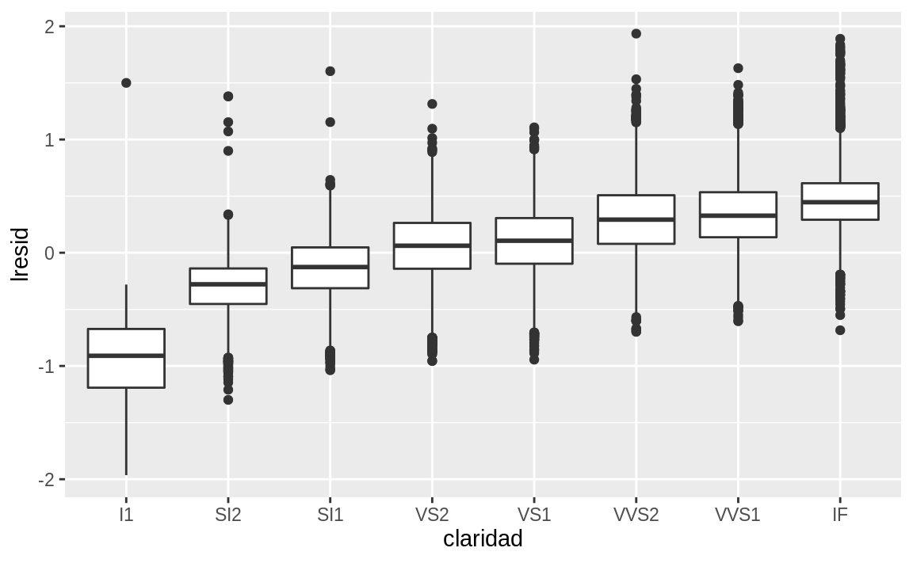
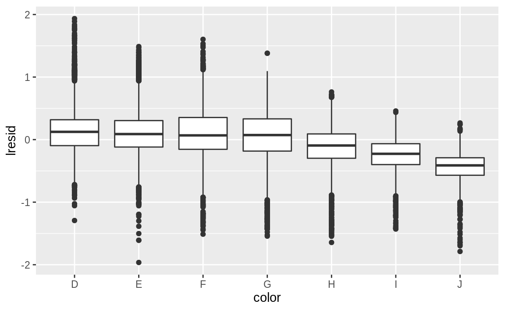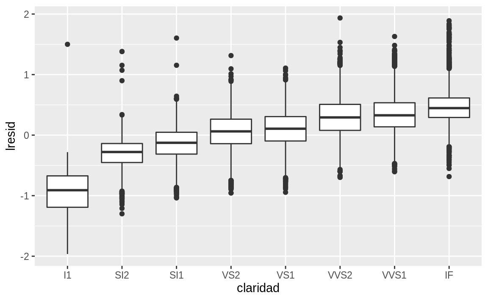
Ahora vemos la relación que esperábamos: a medida que aumenta la calidad del diamante, también lo hace su precio relativo. Para interpretar el eje y, necesitamos pensar que nos dicen los residuos, y en que escala están. Un residuo de -1 indica que log_precio era 1 unidad más baja que la predicción basada únicamente en su peso. \(2^{-1}\) es 1/2, los puntos con un valor de -1 son la mitad del precio esperado, y los residuos con el valor 1 son el doble del precio predicho.
24.2.2 Un modelo más complicado
Si quisiéramos, podríamos continuar construyendo nuestro modelo, traspasando los resultados que hemos observado en el modelo para hacerlos explícitos. Por ejemplo, podríamos incluir color, corte, y claridad en el modelo para que también hagamos explícito el efecto de esas tres variables categóricas:
Este modelo ahora incluye cuatro predictores, por lo que es más difícil de visualizar. Afortunadamente, todos ellos son actualmente independientes lo que significa que podemos graficarlos individualmente en cuatro gráficos. Para hacer el proceso más fácil, vamos a usar el argumento .model en data_grid:
cuadricula <- diamantes2 %>%
data_grid(corte, .model = mod_diamantes2) %>%
add_predictions(mod_diamantes2)
cuadricula
#> # A tibble: 5 x 5
#> corte log_quilates color claridad pred
#> <ord> <dbl> <chr> <chr> <dbl>
#> 1 Regular -0.515 G VS2 11.2
#> 2 Bueno -0.515 G VS2 11.3
#> 3 Muy bueno -0.515 G VS2 11.4
#> 4 Premium -0.515 G VS2 11.4
#> 5 Ideal -0.515 G VS2 11.4
ggplot(cuadricula, aes(corte, pred)) +
geom_point()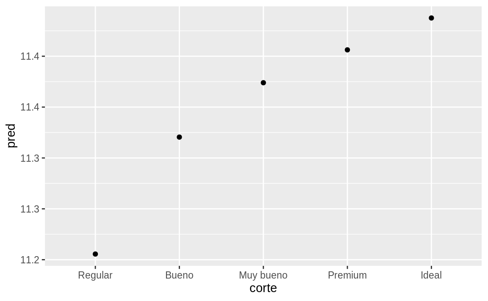
Si el modelo necesita variables que no has suministrado, data_grid() automáticamente los rellenará con el valor “typical”. Para variables continuas, se usa la mediana, y para variables categóricas se usa el valor más frecuente (o valores, si hay un empate).
diamantes2 <- diamantes2 %>%
add_residuals(mod_diamantes2, "lresid2")
ggplot(diamantes2, aes(log_quilates, lresid2)) +
geom_hex(bins = 50)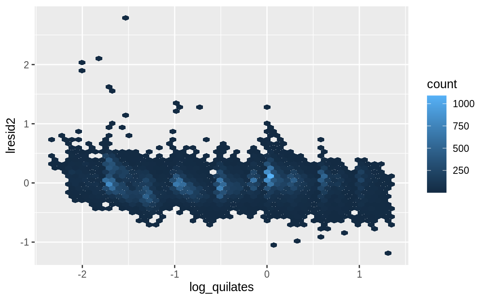
Este gráfico indica que hay algunos diamantes con residuos bastante grandes - recuerda que un residuo de 2 indica que el diamante es 4x el precio que esperábamos. A menudo es útil mirar los valores inusuales individualmente:
diamantes2 %>%
filter(abs(lresid2) > 1) %>%
add_predictions(mod_diamantes2) %>%
mutate(pred = round(2 ^ pred)) %>%
select(precio, pred, quilate:tabla, x:z) %>%
arrange(precio)
#> # A tibble: 16 x 11
#> precio pred quilate corte color claridad profundidad tabla x y z
#> <int> <dbl> <dbl> <ord> <ord> <ord> <dbl> <dbl> <dbl> <dbl> <dbl>
#> 1 1013 264 0.25 Regul… F SI2 54.4 64 4.3 4.23 2.32
#> 2 1186 284 0.25 Premi… G SI2 59 60 5.33 5.28 3.12
#> 3 1186 284 0.25 Premi… G SI2 58.8 60 5.33 5.28 3.12
#> 4 1262 2644 1.03 Regul… E I1 78.2 54 5.72 5.59 4.42
#> 5 1415 639 0.35 Regul… G VS2 65.9 54 5.57 5.53 3.66
#> 6 1415 639 0.35 Regul… G VS2 65.9 54 5.57 5.53 3.66
#> # … with 10 more rowsHasta aquí nada realmente interesante, pero probablemente valga la pena pasar tiempo considerando si esto significa un problema con nuestro modelo, o si hay errores en los datos. Si hay errores en los datos, esta podría ser una oportunidad para comprar diamantes que fueron incorrectamente tasados con valor bajo.
24.2.3 Ejercicios
En el gráfico de
log_quilatesvs.log_precio, hay unas tiras verticales brillantes. ¿Qué representan?Si
log(precio) = a_0 + a_1 * log(quilates), ¿Qué dice eso acerca
la relación entreprecioyquilates?Extrae los diamantes que tienen residuos muy altos y muy bajos. ¿Hay algo inusual en estos diamantes? ¿Son particularmente malos o buenos?, o ¿Crees que estos son errores de precio?
¿El modelo final,
mod_diamantes2, hace un buen trabajo al predecir el precios de los diamantes? ¿Confiarías en lo que te indique gastar si fueras a comprar un diamante?
24.3 ¿Qué afecta el número de vuelos diarios?
Trabajaremos a través de un proceso similar para un conjunto de datos que parece aún más simple a primera vista: el número de vuelos que salen de NYC por día. Este es un conjunto realmente pequeño de datos — solo 365 filas y 2 columnas — y no vamos a terminar con un modelo completamente realizado, pero como veras, los pasos en el camino nos ayudarán a entender mejor los datos. Comenzaremos contando el número de vuelos por día y visualizándolos con ggplot2.
vuelos_por_dia <- vuelos %>%
mutate(fecha = make_date(anio, mes, dia)) %>%
group_by(fecha) %>%
summarise(n = n())
#> `summarise()` ungrouping output (override with `.groups` argument)
vuelos_por_dia
#> # A tibble: 365 x 2
#> fecha n
#> <date> <int>
#> 1 2013-01-01 842
#> 2 2013-01-02 943
#> 3 2013-01-03 914
#> 4 2013-01-04 915
#> 5 2013-01-05 720
#> 6 2013-01-06 832
#> # … with 359 more rows
ggplot(vuelos_por_dia, aes(fecha, n)) +
geom_line()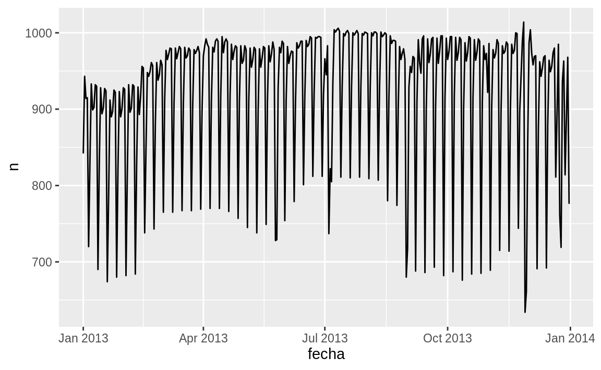
24.3.1 Día de la semana
Comprender la tendencia a largo plazo es un desafío porque hay un fuerte efecto de día de la semana que domina a los patrones más sutiles. Comenzaremos mirando la distribución de número de vuelos por día de la semana:
vuelos_por_dia <- vuelos_por_dia %>%
mutate(dia_semana = wday(fecha, label = TRUE))
ggplot(vuelos_por_dia, aes(dia_semana, n)) +
geom_boxplot()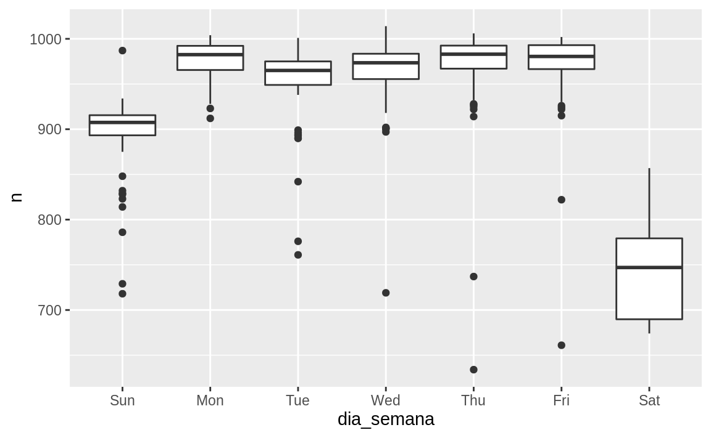
Hay pocos vuelos los fines de semana porque la mayoría de los viajes son por negocios. El efecto es particularmente pronunciado el sábado: alguna vez podrías salir un domingo para ir a una reunión un lunes por la mañana, pero es menos común que salgas un sábado ya que preferirías estar en casa con tu familia.
Una forma de eliminar este fuerte patrón es usar un modelo. Primero, ajustamos el modelo, y mostraremos sus predicciones superpuestas sobre los datos originales:
mod <- lm(n ~ dia_semana, data = vuelos_por_dia)
cuadricula <- vuelos_por_dia %>%
data_grid(dia_semana) %>%
add_predictions(mod, "n")
ggplot(vuelos_por_dia, aes(dia_semana, n)) +
geom_boxplot() +
geom_point(data = cuadricula, colour = "red", size = 4)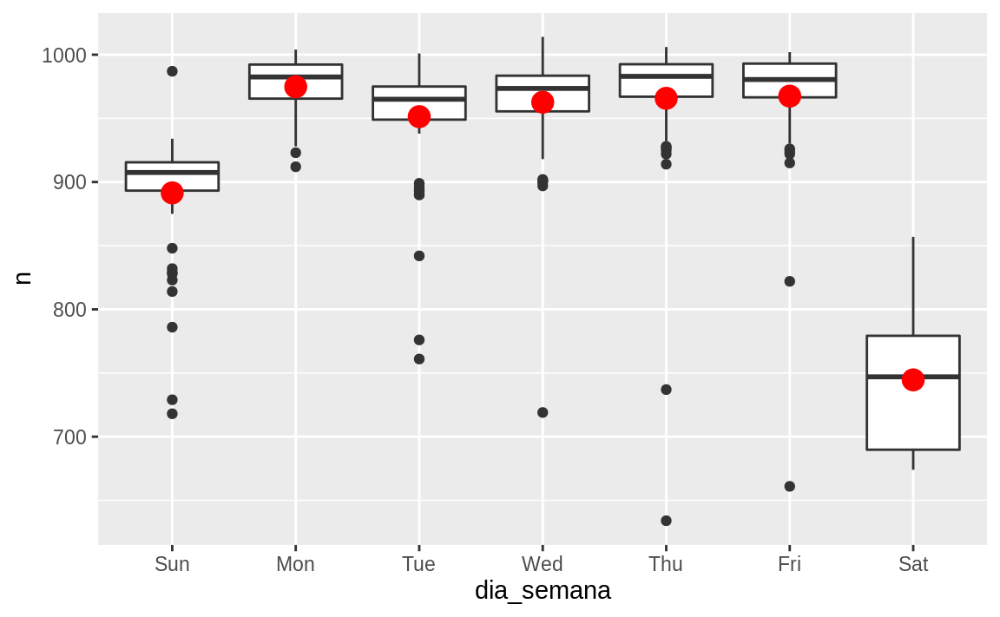
A continuación calculamos y visualizamos los residuos:
vuelos_por_dia <- vuelos_por_dia %>%
add_residuals(mod)
vuelos_por_dia %>%
ggplot(aes(fecha, resid)) +
geom_ref_line(h = 0) +
geom_line()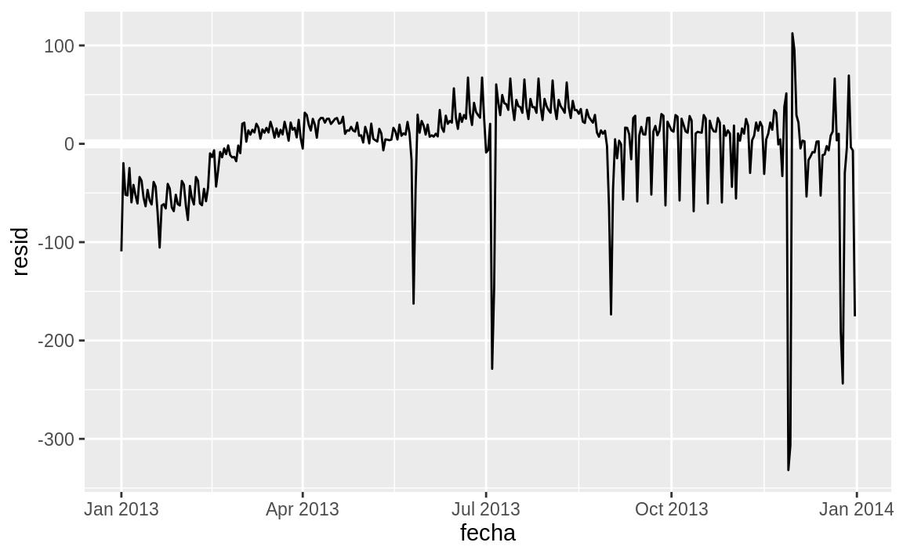
Notar el cambio en el eje Y: ahora estamos viendo el desvío desde el número de vuelos esperados, dado el día de la semana. Este gráfico es útil porque ahora que removimos la mayor parte del efecto día de la semana, podemos ver algo de los patrones más sutiles que quedan:
Nuestro modelo parece fallar a partir de junio: todavía se puede ver un patrón regular fuerte que nuestro modelo no ha capturado. Dibujando un diagrama con una línea para cada día de la semana se hace más facil de ver la causa:
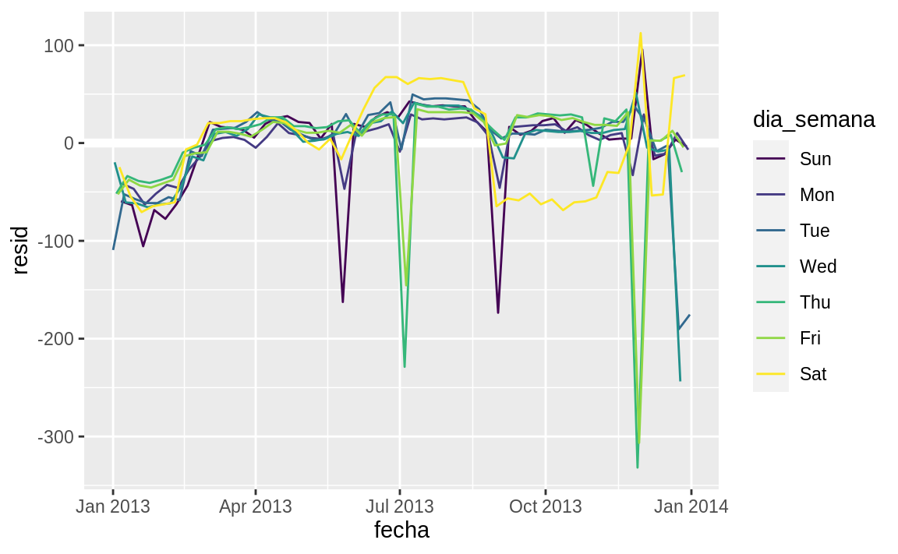
Nuestro modelo falla en predecir con precisión el número de vuelos los sábados: durante el verano hay más vuelos de los que esperamos, y durante el otoño hay menos. Veremos como podemos capturar mejor este patrón en la siguiente sección.
Hay algunos días con mucho menos vuelos que los esperados:
vuelos_por_dia %>% filter(resid < -100) #> # A tibble: 11 x 4 #> fecha n dia_semana resid #> <date> <int> <ord> <dbl> #> 1 2013-01-01 842 Tue -109. #> 2 2013-01-20 786 Sun -105. #> 3 2013-05-26 729 Sun -162. #> 4 2013-07-04 737 Thu -229. #> 5 2013-07-05 822 Fri -145. #> 6 2013-09-01 718 Sun -173. #> # … with 5 more rowsSi estás familiarizado con los feriados públicos de Estados Unidos, podrías reconocer los días de Año Nuevo, el 4 de julio, el día de Acción de Gracias y Navidad. Hay algunos otros que parecen no corresponder a feriados públicos. Trabajarás sobre esos días en uno de los ejercicios.
Parece que hay una tendencia más suave a largo plazo en el transcurso del año. Podemos destacar esa tendencia con
geom_smooth():vuelos_por_dia %>% ggplot(aes(fecha, resid)) + geom_ref_line(h = 0) + geom_line(colour = "grey50") + geom_smooth(se = FALSE, span = 0.20) #> `geom_smooth()` using method = 'loess' and formula 'y ~ x'
Hay menos vuelos en enero (y diciembre), y más en verano (May-Sep). No podemos hacer mucho cuantitativamente con este patrón, porque
sólo tenemos un año de datos. Pero podemos usar nuestro conocimiento para pensar en posibles explicaciones.
24.3.2 Efecto estacional del sábado
Primero abordaremos nuestra falla para predecir con exactitud el número de vuelos el sábado. Un buen lugar para empezar es volver a los números originales, enfocándonos en el sábado:
vuelos_por_dia %>%
filter(dia_semana == "Sat") %>%
ggplot(aes(fecha, n)) +
geom_point() +
geom_line() +
scale_x_date(NULL, date_breaks = "1 month", date_labels = "%b")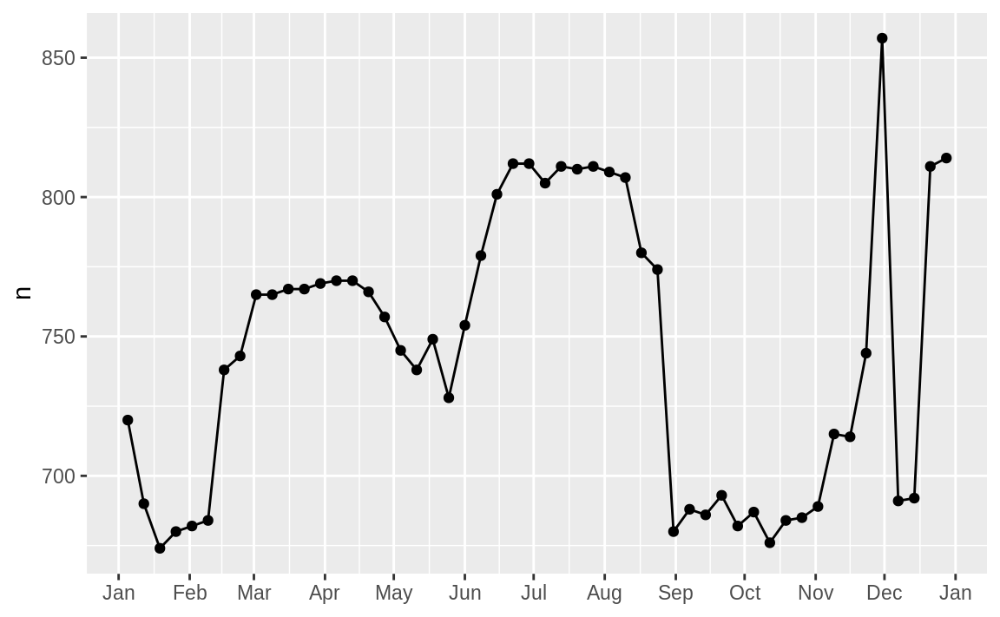
(He usado tanto puntos como líneas para dejar más claro que son los datos y qué es la interpolación).
Sospecho que este patrón es causado por las vacaciones de invierno: mucha gente va de vacaciones en verano, y a las personas no les importa viajar un sábado en sus vacaciones. Al mirar este gráfico, podemos suponer que las vacaciones de verano son de principio de junio a finales de agosto. Parece que se alinea bastante bien con el calendario escolar del estado de NY: las vacaciones de verano en 2013 fueron del 26 de junio hasta el 9 de septiembre.
¿Por qué hay más vuelos los sábados en primavera que en otoño? Le pregunté a algunos amigos estadounidenses y ellos me dijeron que es menos común planificar vacaciones familiares durante el otoño porque debido a los grandes feriados de Acción de Gracias y Navidad. No tenemos los datos para estar seguros, pero parecería una hipótesis de trabajo razonable.
Vamos a crear la variable “trimestre” que capture aproximadamente los tres períodos escolares, y verificamos nuestro trabajo con un gráfico:
trimestre <- function(fecha) {
cut(fecha,
breaks = ymd(20130101, 20130605, 20130825, 20140101),
labels = c("primavera", "verano", "otoño")
)
}
vuelos_por_dia <- vuelos_por_dia %>%
mutate(trimestre = trimestre(fecha))
vuelos_por_dia %>%
filter(dia_semana == "Sat") %>%
ggplot(aes(fecha, n, colour = trimestre)) +
geom_point(alpha = 1/3) +
geom_line() +
scale_x_date(NULL, date_breaks = "1 month", date_labels = "%b")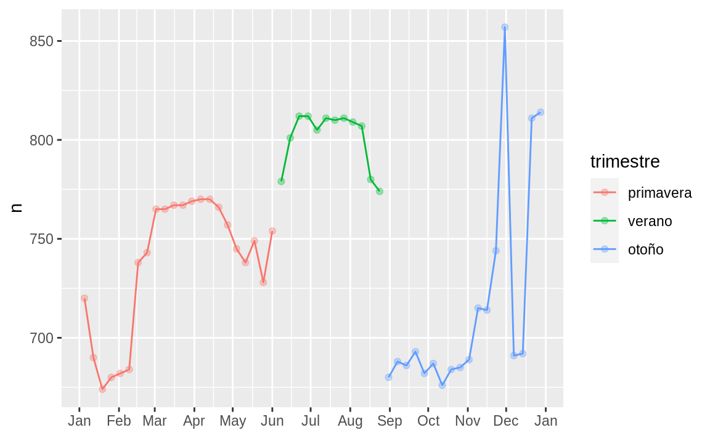
(Modifiqué manualmente las fechas para obtener mejores cortes en el gráfico. Una técnica general y realmente poderosa es usar una visualización para ayudarte a entender lo que tu función está haciendo).
Es útil ver como esta nueva variable afecta los otros días de la semana:
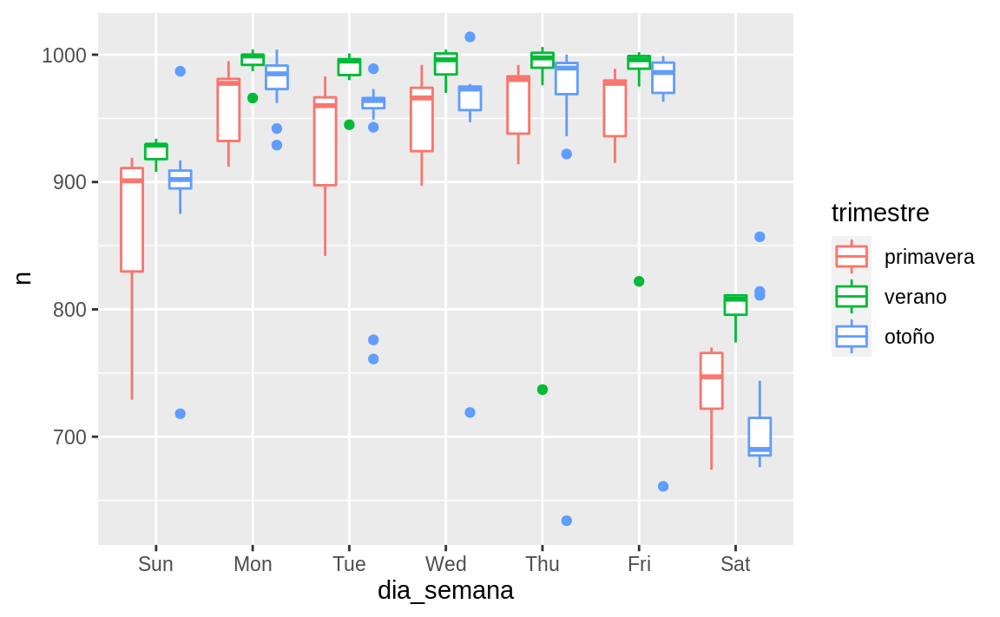
Parece que hay una variación significativa entre los periodos, por lo que es razonable ajustar el efecto de los días de la semana por separado para cada período. Esto mejora nuestro modelo, pero no tanto como podríamos esperar:
mod1 <- lm(n ~ dia_semana, data = vuelos_por_dia)
mod2 <- lm(n ~ dia_semana * trimestre, data = vuelos_por_dia)
vuelos_por_dia %>%
gather_residuals(sin_trimestre = mod1, con_trimestre = mod2) %>%
ggplot(aes(fecha, resid, colour = model)) +
geom_line(alpha = 0.75)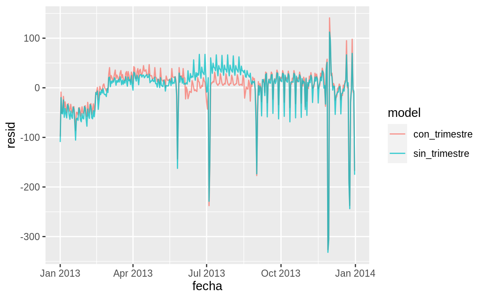
Podemos ver el problema al superponer las predicciones del modelo a los datos crudos:
cuadricula <- vuelos_por_dia %>%
data_grid(dia_semana, trimestre) %>%
add_predictions(mod2, "n")
ggplot(vuelos_por_dia, aes(dia_semana, n)) +
geom_boxplot() +
geom_point(data = cuadricula, colour = "red") +
facet_wrap(~ trimestre)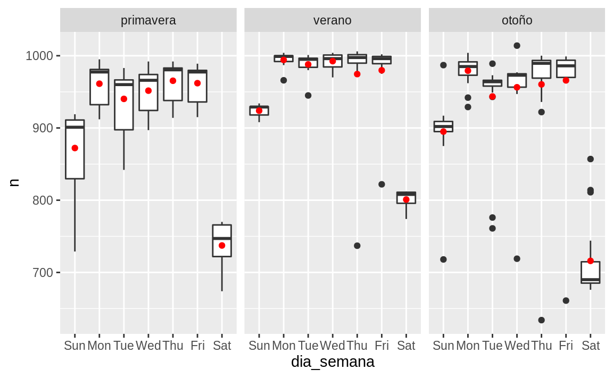
Nuestro modelo esta encontrando el efecto mean , pero tenemos muchos valores atípicos grandes, por lo tanto la media tiende a estar lejos de los valores atípicos. Podemos aliviar este problema usando un modelo que es más robusto a los efectos de los valores atípicos: MASS::rlm(). Esto reduce en gran medida el impacto de los valores atípicos en nuestras estimaciones, y proporciona un modelo que hace un buen trabajo eliminando el patrón del día de la semana:
mod3 <- MASS::rlm(n ~ dia_semana * trimestre, data = vuelos_por_dia)
vuelos_por_dia %>%
add_residuals(mod3, "resid") %>%
ggplot(aes(fecha, resid)) +
geom_hline(yintercept = 0, size = 2, colour = "white") +
geom_line()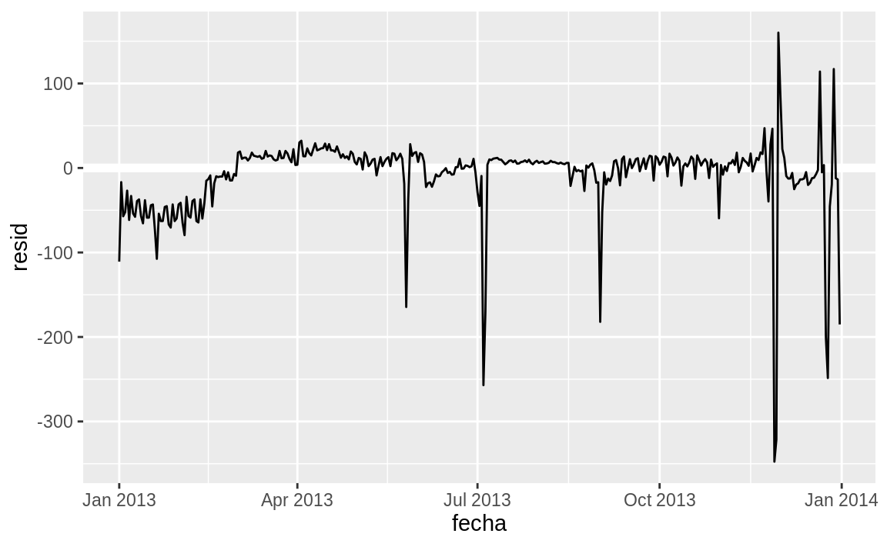
Ahora es mucho más fácil ver la tendencia a largo plazo, los positivos y negativos valores atípicos.
24.3.3 Variables calculadas
Si estas experimentando con muchos modelos y muchas visualizaciones, es una buena idea agrupar la creación de variables en una función para que no haya posibilidad de aplicar accidentalmente transformaciones a diferentes lugares. Por ejemplo, podríamos escribir:
compute_vars <- function(data) {
data %>%
mutate(
trimestre = trimestre(date),
dia_semana = wday(date, label = TRUE)
)
}Otra opción es colocar las transformaciones directamente en la fórmula del modelo:
dia_semana2 <- function(x) wday(x, label = TRUE)
mod3 <- lm(n ~ dia_semana2(fecha) * trimestre(fecha), data = vuelos_por_dia)Cualquiera de los enfoques es razonable. Hacer que una variable transformada sea explicita es útil si quieres verificar tu trabajo, o usarlas en una visualización. Pero no puedes usar fácilmente transformaciones (como splines) que devuelven múltiples columnas. Incluir las transformaciones en el modelo hace la vida más fácil cuando se trabaja con diferentes conjuntos de datos porque el modelo es autónomo.
24.3.4 Época del año: un enfoque alternativo
En la sección anterior usamos nuestro conocimiento (como el calendario escolar de Estados Unidos afecta el viaje) para mejorar el modelo. Una alternativa es utilizar nuestro conocimiento explícito en el modelo para darle a los datos más espacio para hablar. Podríamos utilizar un modelo más flexible y permitir que capture el patrón que nos interesa. Una tendencia lineal simple no es adecuada, por lo que podríamos intentar usar una spline natural para ajustarnos a una curva suave durante el año:
library(splines)
mod <- MASS::rlm(n ~ dia_semana * ns(fecha, 5), data = vuelos_por_dia)
vuelos_por_dia %>%
data_grid(dia_semana, fecha = seq_range(fecha, n = 13)) %>%
add_predictions(mod) %>%
ggplot(aes(fecha, pred, colour = dia_semana)) +
geom_line() +
geom_point()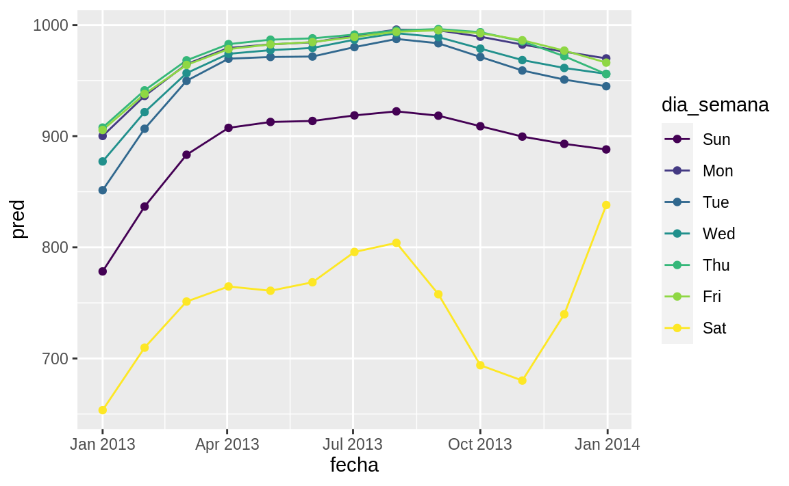
Vemos un patrón fuerte en el número de vuelos de los sábados. Esto es tranquilizador, porque también vimos ese patrón en los datos sin transformar. Es una buena señal cuando obtienes la misma señal desde diferentes enfoques.
24.3.5 Ejercicios
Usa tus habilidades detestivescas con los buscadores para intercambiar ideas sobre por qué hubo menos vuelos esperados el 20 de enero, 26 de mayo y 1 de septiembre. (Pista: todos tienen la misma explicación.) ¿Cómo generalizarías esos días a otros años?
¿Qué representan esos tres días con altos residuos positivos? ¿Cómo se generalizarían esos días a otros años?
Crea una nueva variable que divida la variable
dia_semanaen periodos, pero sólo para sábados, es decir, debería tenerThu,Fri, ySat-verano,Sat-primavera,Sat-otonio. ¿Cómo este modelo se compara con el modelo que tiene la combinación dedia_semanaytrimestre?Crea una nueva variable
dia_semanaque combina el día de la semana, periodos (para sábados), y feriados públicos. ¿Cómo se ven los residuos de este modelo?¿Qué sucede si ajustas un efecto de día de la semana que varía según el mes o varía mes a mes (es decir,
n ~ dia_semana * month)? ¿Por qué esto no es muy útil?¿Que esperarías del modelo
n ~ dia_semana + ns(fecha, 5)? Sabiendo lo que sabes sobre los datos, ¿porqué esperarias que no sea particularmente efectivo?Presumimos que las personas que salen los domingos son probablemente viajeros de negocios quienes necesitan estar en algun lugar el lunes. Explora esa hipótesis al ver cómo se descompone en función de la distancia y tiempo: si es verdad, esperarías ver más vuelos en la tarde del domingo a lugares que estan muy lejos.
Es un poco frustante que el domingo y sábado esté en los extremos opuestos del gráfico. Escribe una pequeña función para establecer los niveles del factor para que la semana comience el lunes.
24.4 Aprende más sobre los modelos
Solo hemos dado una pincelada sobre el tema de modelos, pero es de esperar que hayas adquirido algunas herramientas simples, pero de uso general que puedes usar para mejorar tus propios análisis. ¡Está bien empezar de manera simple! Como has visto, incluso modelos muy simples pueden significar una gran diferencia en tu habilidad para desentrañar las interacciones o pueden generar un incremento dramático en tu habilidad para desentrañar las interacciones.
Estos capítulos de modelos son aún más dogmáticos que el resto del libro. Yo enfoco el modelamiento desde una perspectiva diferente a la mayoría, y hay relativamente poco espacio dedicado a ello. El modelamiento realmente requiere un libro completo, así que recomiendo que leas alguno de estos 3 libros:
Statistical Modeling: A Fresh Approach by Danny Kaplan, http://project-mosaic-books.com/?page_id=13. Este libro provee una introducción suave al modelado, donde desarrollas tu intuición, herramientas matemáticas, y habilidades de R en paralelo. El libro reemplaza al curso tradicional de “Introducción a la Estadística”, proporcionando un plan de estudios actualizado y relevante para ciencia de datos.
An Introduction to Statistical Learning by Gareth James, Daniela Witten, Trevor Hastie, and Robert Tibshirani, http://www-bcf.usc.edu/~gareth/ISL/ (Disponible en línea gratis). Este libro presenta una moderna familia de técnicas de modelamiento colectivamente conocidas como aprendizaje estadístico. Para una más profunda comprensión de la matemática detrás de los modelos, lee el clásico Elements of Statistical Learning por Trevor Hastie, Robert Tibshirani, y Jerome Friedman, http://statweb.stanford.edu/~tibs/ElemStatLearn/ (También disponible en línea gratis).
Applied Predictive Modeling por Max Kuhn and Kjell Johnson, http://appliedpredictivemodeling.com. Este libro es un compañero del paquete caret y provee herramientas prácticas para lidiar con desafíos de modelado predictivo.